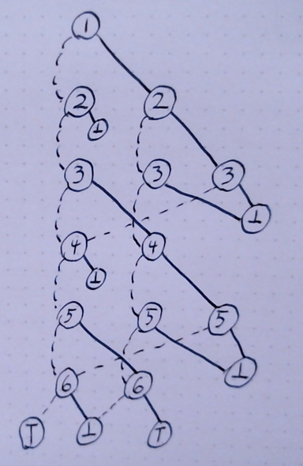

Trading with BDDs
Table of Contents
Introduction
At work, we had a fun "hackathon" where we looked at finding the "best" buy/sell strategy in a stock history. Not shockingly, finding the single best option was easy. Extending to find the best \(N\) trades expectedly slowed down everyone. I know that I am terrible at dynamic programming techniques, so I mostly sat that one out. I did give it a try later, but didn't come up with anything of note. (And I was shown a leetcode writeup on the normal methods for doing this.)
Someone else on the team, though, did this using a MIP formulation that performed rather well. More, an amusing aspect of the formulation made me think about this in terms of another data structure I have yet to use.
Specifically, the thing I noticed was that the MIP formulation treated buying and selling as two distinct things. Whereas before, I lumped them together and then had to deal with overlapping intervals, the MIP formulation just put them together and then had another constraint that the sum of buys was always greater than the sum of sells.
That got me thinking that maybe this would work in a Binary Decision Diagram (BDD). And since I've never actually managed to use one of those, I thought I would find out. (It also helped that I was going in for a medical procedure and could only think on the idea.)
Briefly, a binary decision diagram is a DAG that goes across yes/no decision variables and either ends in True or False. Where you can exit early in the decisions at any time. In general, the size of a BDD can get silly large, such that there are variants that are mostly false that deal with some common problems.
My first attempt to build a diagram for this was not promising, as over just 4 days, I was looking to have 28 nodes in the diagram already. However, playing with it for a bit, I realized that I would only need 15 total nodes for 4 days. Even better, I realized this grew rather slowly for each added day, such that I only need \(2.5N\) total nodes over \(N\) days of possible trades.
Loading market data.
So, lets get to coding. We'll need the market data loaded up. Just pulling that into a global. For this experiment, I loaded up https://www.wsj.com/market-data/quotes/index/DJIA/historical-prices back to 1980.
(defstruct market-info date open high low close) (defvar *market-values* (reverse (with-open-file (in "~/Downloads/HistoricalPrices.csv") (read-line in) ;; Just skipping the header ;; And some shenanigans to read in the data. ;; Clearly, don't do this anywhere other than ;; toys... (let ((*readtable* (copy-readtable nil))) (set-syntax-from-char #\, #\ ) (loop for date = (read in nil) for open = (read in nil) for high = (read in nil) for low = (read in nil) for close = (read in nil) while date collect (make-market-info :date (string date) :open open :high high :low low :close close)))))) (length *market-values*)
10652
Taking a brief look, we see the min/max of this dataset as:
(loop for market-value in *market-values* minimize (market-info-close market-value) into min maximize (market-info-close market-value) into max finally (return (list min max)))
| 776.91 | 36799.65 |
With luck, we can force our algorithm to find these values later.
Building a BDD
So, again, what is a BDD? Simply stated, it is a graph of nodes representing choice variables, where each choice is true/false, so the out degree of each node is 2. The out links are "hi" and "lo" branch where "hi" would be what you do if the referenced variable is true, and "lo" false. (You may be asking why I'm using hi/lo and a few other choices. That is lifted straight from Knuth's Art of Computer Programming. Lifting a bit directly, as I have not built an intuition for any of this, yet.)
(defstruct bdd-node v lo hi aux)
And then building our diagram of choices looks rather involved, but it is somewhat easily stated. I have a boolean variable for whether to buy and sell on each day except the first and the last, as you can only buy or sell on that day. I order the variables such that the odd variables are to buy on a given day, and even are to sell on a given day.
For example, if we wanted to look for the best strategy over 4 days, we would have 6 variables. Variable 1 is to buy on the first day, variable 2 is to sell on the next day, with variable 3 to buy on that day, etc.
With that, we have a decision diagram that looks roughly like:

To read this, nodes are named for the variable they represent. I have them arranged in 3 general columns, where the first column indicates that there is not at open trade, the second column is that there is an open trade, and the last is for when a cooldown to not allow a buy immediately after a sell. (This is needed so that you do not sell and buy on the same day.) Following a route through this diagram is to start on the first variable, and either take the solid path for "true" on that variable, or the dotted for "false." If you ever hit the bottom node, you did something that is not allowed. (So, sell before you have bought, for example.)
The super nice thing about this formulation, is that every added day just adds another two "layers" to this diagram. We just have to make sure that the last day hooks up to the "true" and "false" nodes in the diagram correctly. Easy peasy.
For reasons of "I'm going to naively follow some algorithms from the book," I am going to store all of the decision nodes in an array where the links are indexes into the array. And the root of the BDD will be the high end of the array.
(defun make-trading-bdd (num-days) "Will create and return an array of bdd-nodes for trading over a given number of days." (let* ((num-variables (+ (* 2 (- num-days 2)) 2)) (num-nodes (* 5/2 num-variables)) (bdd-nodes (make-array num-nodes :element-type 'bdd-node :initial-element (make-bdd-node)))) ;;Root of the bdd is the only "level" with a single node. ;;And the bottom are the two sinks (let ((root (1- num-nodes))) (setf (elt bdd-nodes root) (make-bdd-node :v 1 :hi (- root 2) :lo (- root 1)) (elt bdd-nodes 1) (make-bdd-node :v (1+ num-variables) :lo 1 :hi 1) (elt bdd-nodes 0) (make-bdd-node :v (1+ num-variables) :lo 0 :hi 0))) (loop with i = (- (length bdd-nodes) 2) for v from 2 to num-variables if (evenp v) do (setf (elt bdd-nodes i) (make-bdd-node :v v :lo (max (- i 2) 1) :hi 0) (elt bdd-nodes (1- i)) (make-bdd-node :v v :lo (- i 3) :hi (max (- i 4) 1)) i (- i 2)) else do (setf (elt bdd-nodes i) (make-bdd-node :v v :lo (- i 3) :hi (- i 4)) (elt bdd-nodes (- i 1)) (make-bdd-node :v v :lo (- i 4) :hi 0) (elt bdd-nodes (- i 2)) (make-bdd-node :v v :lo (- i 3) :hi 0) i (- i 3))) ;; With some fixup on the end. (setf (bdd-node-hi (elt bdd-nodes 3)) 0) bdd-nodes))
MAKE-TRADING-BDD
How many solutions?
So, that was far more dense than I'd appreciate in production code. Did it work?
First, we need some algorithms this enables. For the first of those, lets see if we can annotate the tree with how many solutions there are to it. (The book uses an extra array `c` for this, but I'm just storing those values attached to the instructions in `aux` for now.)
(defun count-solutions (bdd-nodes) (setf (bdd-node-aux (elt bdd-nodes 0)) 0 (bdd-node-aux (elt bdd-nodes 1)) 1) (loop for k from 2 below (length bdd-nodes) do (let ((l (bdd-node-lo (elt bdd-nodes k))) (h (bdd-node-hi (elt bdd-nodes k))) (v (bdd-node-v (elt bdd-nodes k)))) (setf (bdd-node-aux (elt bdd-nodes k)) (+ (* (expt 2 (- (bdd-node-v (elt bdd-nodes l)) v 1)) (bdd-node-aux (elt bdd-nodes l))) (* (expt 2 (- (bdd-node-v (elt bdd-nodes h)) v 1)) (bdd-node-aux (elt bdd-nodes h))))))) (* (expt 2 (1- (bdd-node-v (elt bdd-nodes (1- (length bdd-nodes)))))) (bdd-node-aux (elt bdd-nodes (1- (length bdd-nodes)))))) ;; Lets look at the general growth of this. (Is a very obvious pattern...) (list (list 2 (count-solutions (make-trading-bdd 2))) (list 3 (count-solutions (make-trading-bdd 3))) (list 4 (count-solutions (make-trading-bdd 4))) (list 5 (count-solutions (make-trading-bdd 5))) (list 6 (count-solutions (make-trading-bdd 6))) (list 7 (count-solutions (make-trading-bdd 7))) (list 8 (count-solutions (make-trading-bdd 8))) ;; And for the last value, going to just look at size of the answer (list (length *market-values*) (log (count-solutions (make-trading-bdd (length *market-values*))) 10)))
| 2 | 2 |
| 3 | 4 |
| 4 | 8 |
| 5 | 16 |
| 6 | 32 |
| 7 | 64 |
| 8 | 128 |
| 10652 | 3206.2705 |
That last value is the size of the search space for optimal trading over \(10,652\) days. I didn't expect this to be a power of two, but I see no reason not to trust it. And, it is a heck of a number.
Finding the optimal solution
Ok, that is fun to consider. But, can we find the optimal solution? Not shockingly, the answer is yes. The book mentions that "we can solve the linear Boolean programming problem" for this. That being "Find \(x\) such that \(w_1x_1 + \ldots + w_nx_n\) is maximum, subject to \(f(x_1,\ldots,x_n)\).
And it goes to give the general algorithm for doing that as the following. (Note that this is largely transcribed from source, and I haven't built the understanding of the code that is needed to make it presentable, yet.)
(defun maximal-cost-solution (bdd-nodes weights) (let* ((s (length bdd-nodes)) (n (1- (bdd-node-v (elt bdd-nodes 0)))) ;;Taking advantage of the sentinel on the false sink to know "n" (m (make-array (1+ s))) (x (make-array n)) (at (make-array (1+ s))) (W (make-array (+ 2 n)))) ;; Something about 1 based indexing... (setf (elt W 0) nil) (setf (elt W (1+ n)) 0) (loop for j from n downto 1 do (setf (elt W j) (+ (elt W (1+ j)) (max (elt weights (1- j)) 0)))) (setf (elt m 1) 0) (loop for k from 2 below s do (let* ((cur-node (elt bdd-nodes k)) (v (bdd-node-v cur-node)) (l (bdd-node-lo cur-node)) (h (bdd-node-hi cur-node)) (mt 0)) ;tmp m (setf (elt at k) 0) (unless (= l 0) (setf (elt m k) (+ (elt m l) (elt W (1+ v)) (- (elt W (bdd-node-v (elt bdd-nodes l))))))) (unless (= h 0) (setf mt (+ (elt m h) (elt W (1+ v)) (- (elt W (bdd-node-v (elt bdd-nodes h)))) (elt weights (1- v)))) (when (or (= l 0) (> mt (elt m k))) (setf (elt m k) mt (elt at k) 1))))) (loop with j = 0 with k = (1- s) if (= j n) return x if (< j (- (bdd-node-v (elt bdd-nodes k)) 1)) do (setf j (1+ j) (elt x (1- j)) (if (> (elt weights (1- j)) 0) 1 0)) if (> k 1) do (setf j (1+ j) (elt x (1- j)) (elt at k) k (if (= (elt at k) 0) (bdd-node-lo (elt bdd-nodes k)) (bdd-node-hi (elt bdd-nodes k)))))))
Trying it on just 4 days, first
We will need a weight vector for how much we value a buy/sell. For the larger trading question, we will build up something big. To build some confidence that we can trust this algorithm, though, lets look at just the 4 day idea.
(let* ((bdd-nodes (make-trading-bdd 4)) (weights #(1 2 3 4 5 6)) (solution (maximal-cost-solution bdd-nodes weights))) (loop for p across weights for v across solution if (= v 1) sum p into profit sum v into trades finally (return (list (/ trades 2) profit))))
| 2 | 14 |
Of course, would be nicer to have a better idea of why that picked 2 trades and how it got to 14 profit. So, lets look closer at the "solution" we are creating.
(let* ((bdd-nodes (make-trading-bdd 4)) (weights #(1 2 3 4 5 6)) (solution (maximal-cost-solution bdd-nodes weights))) (loop for i from 1 for p across weights for v across solution if (= v 1) do (format t "Day ~a, ~a for ~a.~&" (if (evenp i) (1+ (/ i 2)) (/ (1+ i) 2)) (if (evenp i) "Sell" "Buy") p)))
Day 1, Buy for 1. Day 2, Sell for 2. Day 3, Buy for 5. Day 4, Sell for 6.
Ok, that is good. And it makes it obvious that I should have negative costs in there, as the days that you buy are not cash positive. Oops.
So, let us consider what our options are across 4 days. We can:
- buy, pass, pass, sell
- buy, pass, sell, pass
- buy, sell, pass, pass
- buy, sell, buy, sell
- pass, buy, pass, sell
- pass, buy, sell, pass
- pass, pass, buy, sell
- pass, pass, pass, pass
And this matches the count of possible solutions across 4 days that we calculated earlier, so can we force each of these options?
(loop for weights in (list #(-1 0 -1 0 -1 0) #(-1 0 -2 0 -2 2) #(-1 0 -2 2 -2 0) #(-1 2 -1 0 -1 0) #(-1 2 -1 0 -1 2) #(-1 0 -1 2 -1 0) #(-2 0 -1 0 -2 2) #(-1 0 -2 0 -1 2)) do (format t "Looking at ~a: ~&" weights) do (let* ((bdd-nodes (make-trading-bdd 4)) (solution (maximal-cost-solution bdd-nodes weights))) (loop for i from 1 for p across weights for v across solution if (= v 1) do (format t " Day ~a, ~a for ~a.~&" (if (evenp i) (1+ (/ i 2)) (/ (1+ i) 2)) (if (evenp i) "Sell" "Buy") p))))
Looking at #(-1 0 -1 0 -1 0):
Looking at #(-1 0 -2 0 -2 2):
Day 1, Buy for -1.
Day 4, Sell for 2.
Looking at #(-1 0 -2 2 -2 0):
Day 1, Buy for -1.
Day 3, Sell for 2.
Looking at #(-1 2 -1 0 -1 0):
Day 1, Buy for -1.
Day 2, Sell for 2.
Looking at #(-1 2 -1 0 -1 2):
Day 1, Buy for -1.
Day 2, Sell for 2.
Day 3, Buy for -1.
Day 4, Sell for 2.
Looking at #(-1 0 -1 2 -1 0):
Day 2, Buy for -1.
Day 3, Sell for 2.
Looking at #(-2 0 -1 0 -2 2):
Day 2, Buy for -1.
Day 4, Sell for 2.
Looking at #(-1 0 -2 0 -1 2):
Day 3, Buy for -1.
Day 4, Sell for 2.
Rather dense reading there; but, matches expectations. Yay!
Back to the full market data
Now, to build up the weights for the giant solution. For the odd variables, that is spending the money of the close for the relevant day. For the even values, it is gaining the value for the close for the relevant day. (Minus transaction costs, that we default to 0 on all values.)
(defun make-trade-weights (market-values &optional (transaction-cost 0)) (let* ((num-variables (+ (* 2 (- (length market-values) 2)) 2)) (weights (make-array num-variables))) ;;First and last are alone, so setting them alone. (setf (elt weights 0) (- (- (market-info-close (elt market-values 0))) transaction-cost)) (setf (elt weights (1- num-variables)) (- (market-info-close (car (last market-values))) transaction-cost)) ;;Rest of the days are used for a buy and a sell (loop for day in (cdr (butlast market-values)) for i from 1 by 2 do (setf (elt weights i) (- (market-info-close day) transaction-cost) (elt weights (1+ i)) (- (- (market-info-close day)) transaction-cost))) weights))
So, now that we have all of this, what is our answer?
(let* ((bdd-nodes (make-trading-bdd (length *market-values*))) (weights (make-trade-weights *market-values*)) (solution (maximal-cost-solution bdd-nodes weights))) (loop for p across weights for v across solution if (= v 1) sum p into profit sum v into trades finally (return (format nil "~:d trades for a profit of ~~~:d." (/ trades 2) (truncate profit)))))
2,714 trades for a profit of ~427,741.
And, how long did that take?
(let ((*TRACE-OUTPUT* *STANDARD-OUTPUT*)) (time (let* ((bdd-nodes (make-trading-bdd (length *market-values*))) (weights (make-trade-weights *market-values*)) (solution (maximal-cost-solution bdd-nodes weights))) (loop for p across weights for v across solution if (= v 1) sum p into profit sum v into trades finally (return (format nil "~:d trades for a profit of ~~~:d." (/ trades 2) (truncate profit)))))))
Evaluation took: 0.004 seconds of real time 0.005063 seconds of total run time (0.005002 user, 0.000061 system) 125.00% CPU 19,200,488 processor cycles 4,506,768 bytes consed
So, yeah, fast and only about 4 megs of data generated. I personally feel this is insane and I was not expecting it to work. Is fast enough that I confess I'm not sure I trust it.
Looking at the solutions a bit more.
As we noted at the start, the min/max spread of this is roughly \(36000.00\). Such that, if the transaction cost was near that, we should be able to force a single buy/sell. Lets see what we can do there.
(let* ((bdd-nodes (make-trading-bdd (length *market-values*))) (weights (make-trade-weights *market-values* (/ 36000 2))) (solution (maximal-cost-solution bdd-nodes weights))) (loop for p across weights for v across solution if (= v 1) sum p into profit sum v into trades finally (return (format nil "~:d trade for a profit of ~~~:d." (/ trades 2) (truncate profit)))))
1 trade for a profit of ~22.
And what day does that have us buying/selling?
(let* ((transaction-cost (/ 36000 2)) (bdd-nodes (make-trading-bdd (length *market-values*))) (weights (make-trade-weights *market-values* transaction-cost)) (solution (maximal-cost-solution bdd-nodes weights))) (loop for i from 1 for p across weights for v across solution if (= v 1) do (format t "Day ~a, ~a for ~a.~&" (if (evenp i) (1+ (/ i 2)) (/ (1+ i) 2)) (if (evenp i) "Sell" "Buy") (+ transaction-cost p))))
Day 492, Buy for -776.91016. Day 10425, Sell for 36799.65.
And this matches what we saw for the min/max of the closing value. So, I am starting to trust this more.
How easy is it to manipulate the result we are getting to constrict the number of trades? Seems within reason that I could easily get ballpark number of optimal trades with a growing transaction cost. That is, I almost certainly can't target a specific N, but I can treat the transaction cost as a lever to dial up and down the number of trades.
At the small level, this looks like:
(loop for transaction-cost from 0 to 10 by 1 collect (let* ((bdd-nodes (make-trading-bdd (length *market-values*))) (weights (make-trade-weights *market-values* transaction-cost)) (solution (maximal-cost-solution bdd-nodes weights))) (loop for p across weights for v across solution if (= v 1) sum p into profit sum v into trades finally (return (list (format nil "A transaction cost of ~:d results in ~:d trades for a profit of ~~~:d." (truncate transaction-cost) (/ trades 2) (truncate profit)))))))
| A transaction cost of 0 results in 2,714 trades for a profit of ~427,741. |
| A transaction cost of 1 results in 2,564 trades for a profit of ~422,492. |
| A transaction cost of 2 results in 2,424 trades for a profit of ~417,521. |
| A transaction cost of 3 results in 2,296 trades for a profit of ~412,839. |
| A transaction cost of 4 results in 2,172 trades for a profit of ~408,372. |
| A transaction cost of 5 results in 2,085 trades for a profit of ~404,181. |
| A transaction cost of 6 results in 2,018 trades for a profit of ~400,096. |
| A transaction cost of 7 results in 1,954 trades for a profit of ~396,129. |
| A transaction cost of 8 results in 1,886 trades for a profit of ~392,340. |
| A transaction cost of 9 results in 1,817 trades for a profit of ~388,645. |
| A transaction cost of 10 results in 1,747 trades for a profit of ~385,091. |
And to get an idea at the large level, it looks like:
(loop for transaction-cost from 0 to 5500 by 250 collect (let* ((bdd-nodes (make-trading-bdd (length *market-values*))) (weights (make-trade-weights *market-values* transaction-cost)) (solution (maximal-cost-solution bdd-nodes weights))) (loop for p across weights for v across solution if (= v 1) sum p into profit sum v into trades finally (return (list (format nil "A transaction cost of ~:d results in ~:d trades for a profit of ~~~:d." (truncate transaction-cost) (/ trades 2) (truncate profit)))))))
| A transaction cost of 0 results in 2,714 trades for a profit of ~427,741. |
| A transaction cost of 250 results in 168 trades for a profit of ~150,320. |
| A transaction cost of 500 results in 62 trades for a profit of ~99,116. |
| A transaction cost of 750 results in 32 trades for a profit of ~77,099. |
| A transaction cost of 1,000 results in 17 trades for a profit of ~64,798. |
| A transaction cost of 1,250 results in 12 trades for a profit of ~57,510. |
| A transaction cost of 1,500 results in 8 trades for a profit of ~53,038. |
| A transaction cost of 1,750 results in 7 trades for a profit of ~49,457. |
| A transaction cost of 2,000 results in 7 trades for a profit of ~45,957. |
| A transaction cost of 2,250 results in 5 trades for a profit of ~42,757. |
| A transaction cost of 2,500 results in 5 trades for a profit of ~40,255. |
| A transaction cost of 2,750 results in 4 trades for a profit of ~38,220. |
| A transaction cost of 3,000 results in 3 trades for a profit of ~36,599. |
| A transaction cost of 3,250 results in 3 trades for a profit of ~35,099. |
| A transaction cost of 3,500 results in 3 trades for a profit of ~33,597. |
| A transaction cost of 3,750 results in 3 trades for a profit of ~32,099. |
| A transaction cost of 4,000 results in 2 trades for a profit of ~30,982. |
| A transaction cost of 4,250 results in 2 trades for a profit of ~29,982. |
| A transaction cost of 4,500 results in 2 trades for a profit of ~28,979. |
| A transaction cost of 4,750 results in 2 trades for a profit of ~27,981. |
| A transaction cost of 5,000 results in 2 trades for a profit of ~26,982. |
| A transaction cost of 5,250 results in 2 trades for a profit of ~25,981. |
| A transaction cost of 5,500 results in 1 trades for a profit of ~25,022. |
Thanks for reading!
For those that stuck with this, thanks for reading! I had more than a little fun actually using a BDD. I'm looking forward to finding out how or what I did incorrectly in my first stab at it.
Finally, please don't let my abuse of either Common Lisp or Knuth's algorithms turn you off from trying either. Knuth's work, in particular, has turned to the exploration of a lot of puzzles in fun ways that are much more approachable than you probably think.